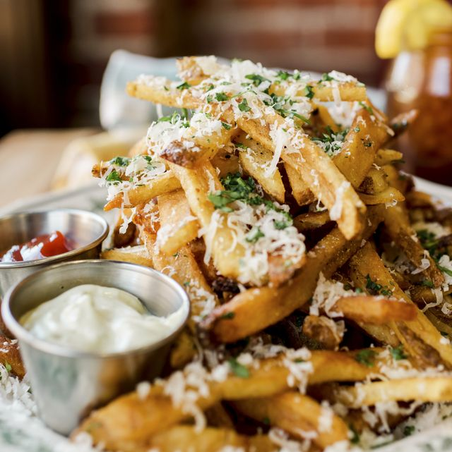

Garlic fry recipe

Description
These mouthwatering fries are the salty snack you need to satisfy your junk food cravings.
These simple yet falvorful fries are quick and easy to make. They are the perfect side to elevate
your burgers, frozen chicken tendies, or even just a midight munchie. you can use frozen fries for a shortcut
or you can use potatoes if you have the time
Ingredients
- 4 medium russet potatoes or any of your choosing
- enough vegetable oil to fill your pot about halfway up
- 9 cloves of garlic
- kosher salt
- garlic powder
- 5 ounces of parmesan cheese
- stick of melted butter
Steps
- If using frozen fries skip the next two steps
- Rinse and peel the potatoes (unless you like the skin), and cut into sticks
- Let the sticks soak in a large bowl of cold water for 2 hours (overnight is best)
- prepare garlic butter by melting butter with the rind of the parmesan, and garlic
- let the butter steep on low for 30 minutes until to garlic is soft and brown
- strain the butter and keep in pan unitl ready to serve
- heat up the oil until 300 degrees and fry the sticks in batches
- once all potatoes cooked, bring oil to 400 degrees for second frying session
- fry the soon to be french fries until they are golden brown and crispy and drain them on towel
- sprinkle garlic powder, salt, and half of the freshly grated parm over the fries in a large bowl and toss
- finally, top the fries with butter and rest of the cheese before serving